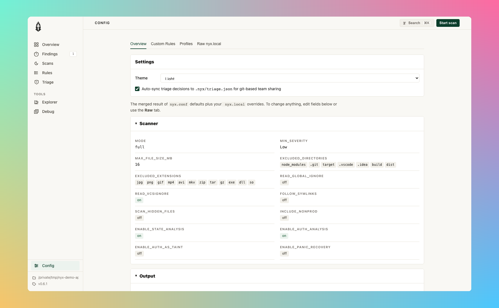

#Configuration
Nyx uses TOML configuration files. A default config is auto-generated on first run. If you'd rather edit settings and rules from the browser, the Config page in nyx serve is a live editor that writes back to nyx.local:

#File Locations
| Platform | Directory |
|---|---|
| Linux | ~/.config/nyx/ |
| macOS | ~/Library/Application Support/nyx/ |
| Windows | %APPDATA%\elicpeter\nyx\config\ |
Run nyx config path to see the exact directory on your system.
#File Precedence
nyx.conf-- Default config (auto-created from built-in template on first run)nyx.local-- User overrides (loaded on top of defaults)
Both files are optional. CLI flags take precedence over both.
#Merge Strategy
| Type | Behavior |
|---|---|
Scalars (mode, min_severity, booleans) |
User value wins |
Arrays (excluded_extensions, excluded_directories, excluded_files) |
Union + deduplicate |
| Analysis rules | Per-language union with deduplication |
| Profiles | User profile with same name fully replaces built-in |
| Server / Runs | User value wins (full section override) |
Example:
# nyx.conf (default):
excluded_extensions = ["jpg", "png", "exe"]
# nyx.local (user):
excluded_extensions = ["foo", "jpg"]
# Effective result:
# ["exe", "foo", "jpg", "png"] -- sorted, deduped union#Full Schema
#[scanner]
| Field | Type | Default | Description |
|---|---|---|---|
mode |
"full" | "ast" | "cfg" | "taint" |
"full" |
Analysis mode |
min_severity |
"Low" | "Medium" | "High" |
"Low" |
Minimum severity to report |
max_file_size_mb |
int | null | 16 | Max file size in MiB; null = unlimited. Default is a safe ceiling for untrusted repos; lift explicitly when scanning trusted codebases with large generated files |
excluded_extensions |
[string] | ["jpg", "png", "gif", "mp4", ...] |
File extensions to skip |
excluded_directories |
[string] | ["node_modules", ".git", "target", ...] |
Directories to skip |
excluded_files |
[string] | [] |
Specific files to skip |
read_global_ignore |
bool | false |
Honor global ignore file (RESERVED) |
read_vcsignore |
bool | true |
Honor .gitignore / .hgignore |
require_git_to_read_vcsignore |
bool | true |
Require .git dir to apply gitignore |
one_file_system |
bool | false |
Don't cross filesystem boundaries |
follow_symlinks |
bool | false |
Follow symbolic links |
scan_hidden_files |
bool | false |
Scan dot-files |
include_nonprod |
bool | false |
Keep original severity for test/vendor paths |
enable_state_analysis |
bool | true |
Enable resource lifecycle + auth state analysis. Detects use-after-close, double-close, resource leaks (per-function scope), and unauthenticated access. Requires mode = "full" or mode = "taint". |
#[database]
| Field | Type | Default | Description |
|---|---|---|---|
path |
string | "" |
Custom SQLite DB path; empty = platform default (RESERVED) |
auto_cleanup_days |
int | 30 |
Days to keep DB files (RESERVED) |
max_db_size_mb |
int | 1024 |
Maximum DB size in MiB (RESERVED) |
vacuum_on_startup |
bool | false |
Run VACUUM before indexed scans |
#[output]
| Field | Type | Default | Description |
|---|---|---|---|
default_format |
"console" | "json" | "sarif" |
"console" |
Default output format (used when --format is not specified) |
quiet |
bool | false |
Suppress status messages |
max_results |
int | null | null | Cap number of findings; null = unlimited |
attack_surface_ranking |
bool | true |
Enable attack-surface ranking |
min_score |
int | null | null | Minimum rank score to include; null = no minimum |
min_confidence |
string | null | null | Minimum confidence level ("low", "medium", "high"); null = no minimum |
include_quality |
bool | false |
Include Quality-category findings (hidden by default) |
show_all |
bool | false |
Disable category filtering, rollups, and LOW budgets |
max_low |
int | 20 |
Maximum total LOW findings to show (rollups count as 1) |
max_low_per_file |
int | 1 |
Maximum LOW findings per file (rollups count as 1) |
max_low_per_rule |
int | 10 |
Maximum LOW findings per rule (rollups count as 1) |
rollup_examples |
int | 5 |
Number of example locations stored in rollup findings |
#[performance]
| Field | Type | Default | Description |
|---|---|---|---|
max_depth |
int | null | null | Max filesystem traversal depth; null = unlimited |
min_depth |
int | null | null | Min depth for reported entries (RESERVED) |
prune |
bool | false |
Stop traversing into matching directories (RESERVED) |
worker_threads |
int | null | null | Worker thread count; null/0 = auto-detect |
batch_size |
int | 100 |
Files per index batch |
channel_multiplier |
int | 4 |
Channel capacity = threads x multiplier |
rayon_thread_stack_size |
int | 8388608 |
Rayon thread stack size in bytes (8 MiB) |
scan_timeout_secs |
int | null | null | Per-file timeout in seconds (RESERVED) |
memory_limit_mb |
int | 512 |
Max memory in MiB (RESERVED) |
#[server]
Configuration for the local web UI (nyx serve).
| Field | Type | Default | Description |
|---|---|---|---|
enabled |
bool | true |
Whether the serve command is enabled |
host |
string | "127.0.0.1" |
Host to bind to (localhost by default) |
port |
int | 9700 |
Port for the web UI |
open_browser |
bool | true |
Open browser automatically on serve |
auto_reload |
bool | true |
Auto-reload UI when scan results change |
persist_runs |
bool | true |
Persist scan runs for history view |
max_saved_runs |
int | 50 |
Maximum number of saved runs |
#[runs]
Configuration for scan run persistence and history.
| Field | Type | Default | Description |
|---|---|---|---|
persist |
bool | false |
Persist scan run history to disk |
max_runs |
int | 100 |
Maximum number of runs to keep |
save_logs |
bool | false |
Save scan logs with each run |
save_stdout |
bool | false |
Save stdout capture with each run |
save_code_snippets |
bool | true |
Save code snippets in findings |
#[profiles.<name>]
Named scan presets that override scan-related config. Activate with --profile <name>.
All fields are optional; omitted fields inherit from the base config.
| Field | Type | Description |
|---|---|---|
mode |
string | Analysis mode |
min_severity |
string | Minimum severity |
max_file_size_mb |
int | Max file size in MiB |
include_nonprod |
bool | Keep original severity for test/vendor |
enable_state_analysis |
bool | Enable state analysis |
default_format |
string | Output format |
quiet |
bool | Suppress status output |
attack_surface_ranking |
bool | Enable ranking |
max_results |
int | Max findings |
min_score |
int | Min rank score |
show_all |
bool | Show all findings |
include_quality |
bool | Include quality findings |
worker_threads |
int | Worker thread count |
max_depth |
int | Max traversal depth |
Built-in profiles:
| Name | Description |
|---|---|
quick |
AST-only, medium+ severity |
full |
Full analysis with state analysis enabled |
ci |
Full analysis, medium+ severity, quiet, SARIF output |
taint_only |
Taint analysis only |
conservative_large_repo |
AST-only, high severity, 5 MiB file limit, depth 10 |
User-defined profiles with the same name as a built-in will override it.
#[analysis.engine]
Release-grade switches for the optional analysis passes. Each toggle has a
matching CLI flag (pair of --foo / --no-foo) that overrides the config
value for a single run. These used to be NYX_* environment variables
(NYX_CONSTRAINT, NYX_ABSTRACT_INTERP, NYX_SYMEX, NYX_CROSS_FILE_SYMEX,
NYX_SYMEX_INTERPROC, NYX_CONTEXT_SENSITIVE, NYX_PARSE_TIMEOUT_MS,
NYX_SMT); those env vars are still honored as a last-resort override when
nyx is used as a library (no CLI entry point), but the config/CLI surface is
the stable path.
| Field | Type | Default | Description |
|---|---|---|---|
constraint_solving |
bool | true |
Path-constraint solving (prunes infeasible paths in taint) |
abstract_interpretation |
bool | true |
Interval / string / bit abstract domains carried through the SSA worklist |
context_sensitive |
bool | true |
k=1 context-sensitive callee inlining for intra-file calls |
backwards_analysis |
bool | false |
Demand-driven backwards taint walk from sinks (adds scan time; default off) |
parse_timeout_ms |
int | 10000 |
Per-file tree-sitter parse timeout; 0 disables the cap |
[analysis.engine.symex] sub-section:
| Field | Type | Default | Description |
|---|---|---|---|
enabled |
bool | true |
Run the symex pipeline after taint; adds witness strings and symbolic verdicts |
cross_file |
bool | true |
Persist / consult cross-file SSA bodies so symex can reason about callees defined in other files |
interprocedural |
bool | true |
Intra-file interprocedural symex (k ≥ 2 via frame stack) |
smt |
bool | true |
Use the SMT backend when nyx is built with the smt feature; ignored otherwise |
CLI flag map (each pair is --enable / --no-enable):
| Config field | CLI flags |
|---|---|
constraint_solving |
--constraint-solving / --no-constraint-solving |
abstract_interpretation |
--abstract-interp / --no-abstract-interp |
context_sensitive |
--context-sensitive / --no-context-sensitive |
backwards_analysis |
--backwards-analysis / --no-backwards-analysis |
parse_timeout_ms |
--parse-timeout-ms <N> |
symex.enabled |
--symex / --no-symex |
symex.cross_file |
--cross-file-symex / --no-cross-file-symex |
symex.interprocedural |
--symex-interproc / --no-symex-interproc |
symex.smt |
--smt / --no-smt |
Engine-depth profile shortcut: instead of flipping individual toggles, pass --engine-profile {fast,balanced,deep} to set the whole stack at once. Individual flags override the profile, so --engine-profile fast --backwards-analysis runs the fast stack with backwards analysis on. See docs/cli.md for the exact toggle matrix.
Explain effective engine: pass --explain-engine to print the resolved engine configuration (profile + config + CLI overrides) and exit without scanning.
#[detectors.data_exfil]
Per-project tuning for the taint-data-exfiltration rule. All fields are optional.
| Field | Type | Default | Description |
|---|---|---|---|
enabled |
bool | true |
Set false to strip Cap::DATA_EXFIL from sink caps before emission. No taint-data-exfiltration finding reaches the report. Other taint classes are not affected. |
trusted_destinations |
[string] | [] |
URL prefixes that drop Cap::DATA_EXFIL on the call site. Matched against the abstract-string domain prefix of the destination arg, so a literal URL or a template literal with a static prefix both work. Use full origins or origin-pinned paths and include the trailing /, otherwise https://api. matches https://api.evil.example.com/ too. |
[detectors.data_exfil]
enabled = true
trusted_destinations = [
"https://api.internal/",
"https://telemetry.example.com/",
]For the sanitizer convention, source sensitivity gate, and per-language sink coverage, see Detectors / Taint / DATA_EXFIL.
#[analysis.languages.<slug>]
Per-language custom rules. <slug> is one of: rust, javascript, typescript, python, go, java, c, cpp, php, ruby.
| Field | Type | Description |
|---|---|---|
rules |
array of rule objects | Custom label rules |
terminators |
[string] | Functions that terminate execution |
event_handlers |
[string] | Event handler function names |
Rule object:
[[analysis.languages.javascript.rules]]
matchers = ["escapeHtml"]
kind = "sanitizer" # "source" | "sanitizer" | "sink"
cap = "html_escape" # "env_var" | "html_escape" | "shell_escape" |
# "url_encode" | "json_parse" | "file_io" |
# "fmt_string" | "sql_query" | "deserialize" |
# "ssrf" | "data_exfil" | "code_exec" | "crypto" |
# "unauthorized_id" | "ldap_injection" |
# "xpath_injection" | "header_injection" |
# "open_redirect" | "ssti" | "xxe" |
# "prototype_pollution" | "all"Aliases accepted by parse_cap and [..rules].cap: data_exfiltration for data_exfil, ldapi for ldap_injection, xpathi for xpath_injection, crlf and response_splitting for header_injection, redirect for open_redirect, template_injection for ssti, proto_pollution for prototype_pollution.
#Example Configurations
#Minimal override (nyx.local)
[scanner]
min_severity = "Medium"
[output]
default_format = "json"
max_results = 100#CI-optimized
[scanner]
mode = "full"
min_severity = "Medium"
excluded_directories = ["node_modules", ".git", "target", "vendor", "dist"]
[output]
quiet = true
default_format = "sarif"
[performance]
worker_threads = 4#Using a scan profile
# Use a built-in profile
nyx scan --profile ci
# CLI flags still override profile values
nyx scan --profile ci --format json#Custom profile
[profiles.security_audit]
mode = "full"
min_severity = "Low"
enable_state_analysis = true
show_all = true#Custom rules for a Node.js project
[analysis.languages.javascript]
terminators = ["process.exit", "abort"]
event_handlers = ["addEventListener"]
[[analysis.languages.javascript.rules]]
matchers = ["escapeHtml", "sanitizeInput"]
kind = "sanitizer"
cap = "html_escape"
[[analysis.languages.javascript.rules]]
matchers = ["dangerouslySetInnerHTML"]
kind = "sink"
cap = "html_escape"
[[analysis.languages.javascript.rules]]
matchers = ["getRequestBody", "readUserInput"]
kind = "source"
cap = "all"#Adding rules via CLI
# Add a sanitizer
nyx config add-rule --lang javascript --matcher escapeHtml --kind sanitizer --cap html_escape
# Add a terminator
nyx config add-terminator --lang javascript --name process.exit
# Verify
nyx config show#Config Validation
Config is validated after loading and merging. Validation checks include:
- Server port must be 1–65535
- Server host must not be empty
max_saved_runsmust be > 0 whenpersist_runsis truemax_runsmust be > 0 whenpersistis truebatch_sizeandchannel_multipliermust be > 0rollup_examplesmust be > 0- Profile names must be alphanumeric with underscores only
Invalid config produces structured error messages identifying the section, field, and issue.
#State Analysis
State analysis detects resource lifecycle violations (use-after-close, double-close, resource leaks) and unauthenticated access patterns. It is enabled by default.
To disable:
[scanner]
enable_state_analysis = falseState analysis requires mode = "full" or mode = "taint". It has no effect in mode = "ast".
Tradeoffs:
- Additional per-function state-machine pass adds some scan time
- May produce findings that require domain knowledge to evaluate (e.g., whether a resource handle is intentionally left open)
- Most useful for C, C++, Rust, Go, and Java where acquire/release patterns are common
#Upgrading
#Engine-version mismatch is handled automatically
Nyx stores the scanner's CARGO_PKG_VERSION in the project index database.
When the version recorded in the DB differs from the running binary; or the
row is missing entirely; every cached summary, SSA body, and file-hash row
is wiped on the next open so the next scan rebuilds the index against the new
engine. No flag is needed; CI pipelines keep working across upgrades.
The rebuild is logged at info level:
engine version changed (<old> → <new>), rebuilding indexIf you see this once per upgrade it is working as intended. If you see it on every scan, the metadata row is not being persisted; file an issue.
#Forcing a reindex
Use --index rebuild to throw away the current project's cached summaries
and re-run pass 1 against the current rules. Useful after editing
nyx.local rules, after an upgrade that changed label definitions without
changing the engine version, or when you want a known-clean baseline:
nyx scan --index rebuild .This clears the current project's rows in files, function_summaries,
ssa_function_summaries, and ssa_function_bodies; other projects sharing
the same DB directory are untouched.
#Recovering from a corrupt database
If the .sqlite file itself is damaged (e.g. from a killed scan or full
disk) and nyx scan fails to open it, delete the file and let the next
scan recreate it:
rm "$(nyx config path)"/<project>.sqlite*On the next scan Nyx builds a fresh index from scratch.
#Reserved Fields
Some config fields are defined but not yet implemented. They are marked (RESERVED) in the default config and accept values without effect. This allows forward-compatible config files; settings will activate when the feature is implemented without requiring config changes.